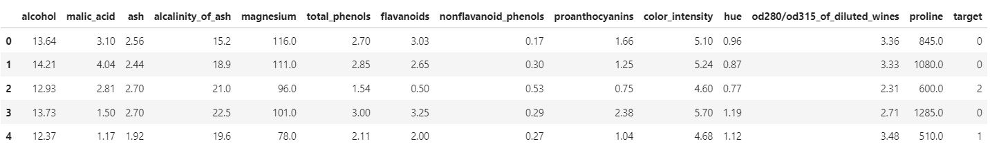
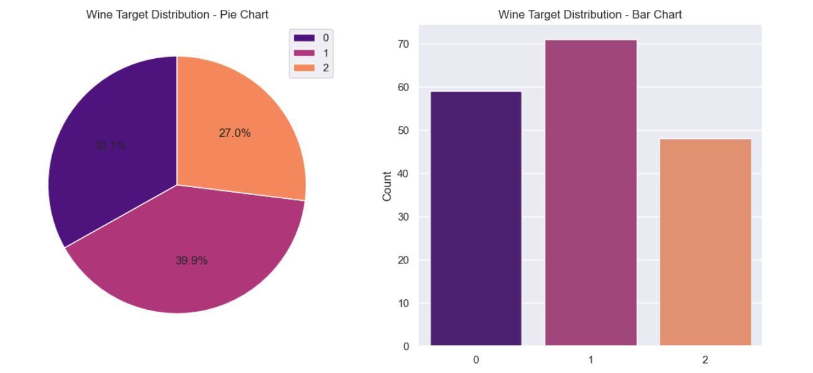
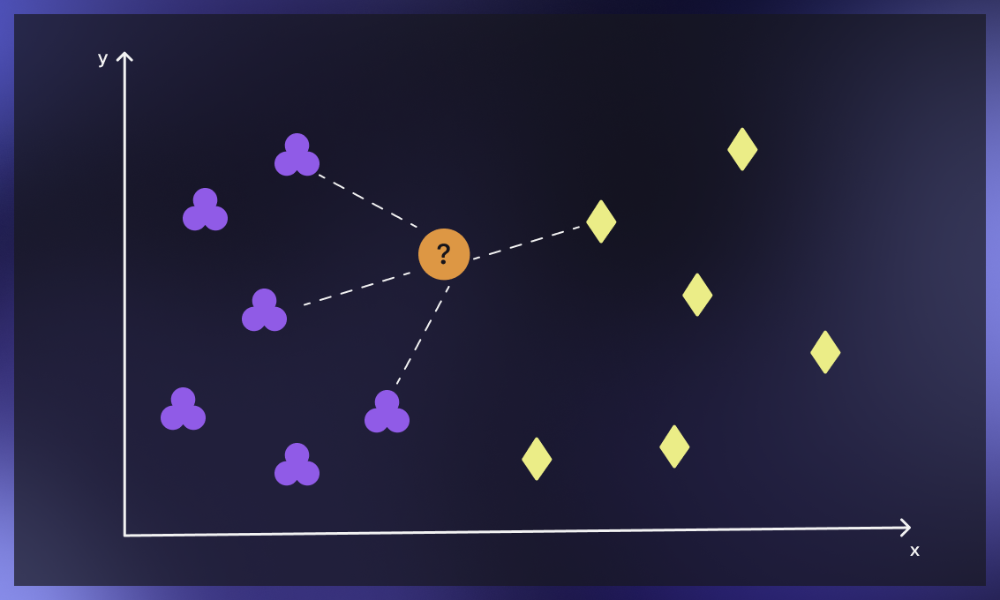

Giriş
XGBoost (eXtreme Gradient Boosting), günümüzde en popüler ve başarılı makine öğrenimi algoritmalarından biridir. XGBoost, Gradient Boosting algoritmasının özel bir implementasyonudur. Gradient Boosting, zayıf öğreniciler olarak adlandırılan çok sayıda basit öğreniciyi bir araya getirerek güçlü bir öğrenici oluşturur. XGBoost , bu fikri geliştirir ve ağaç yapıları olarak bilinen öğrenicilerin bir araya getirilmesiyle birlikte, verimlilik açısından çeşitli iyileştirmeler sağlar.
XGBoost, hem sınıflandırma hem de regresyon problemleri için yüksek tahmin doğruluğu sunar ve daha az eğitim süresi gerektirir. Temel olarak, XGBoost, bir dizi zayıf öğreniciyi (learner) - genellikle karar ağaçları (decision trees) - birleştirerek güçlü bir öğrenici (learner) oluşturan gradient boosting algoritmasının optimize edilmiş bir uygulamasıdır. XGBoost'un başarısının arkasındaki anahtar faktörler, düzenlileştirme (regularization) , paralel hesaplama (parallel computation) ve özel olarak tasarlanmış ağaç öğrenme algoritmalarıdır.
XGBoost'un bazı alt sınıfları şunlardır:
-
XGBClassifier: XGBoost algoritmasının sınıflandırma problemleri için optimize edilmiş bir implementasyonudur. Bu sınıf, özellikle büyük ve karmaşık veri setleri için yüksek performanslı sınıflandırma modelleri oluşturmak için tasarlanmıştır. XGBoost'un özel implementasyonu sayesinde, hızlı öğrenme ve yüksek doğruluk sağlanır..
-
XGBRFClassifier: Rastgele Orman (Random Forest) tabanlı sınıflandırma problemleri için kullanılır. Bu sınıf, birden fazla karar ağacını birleştirerek sınıflandırma modeli oluşturur ve bu sayede overfitting (aşırı öğrenme) riskini azaltır.
-
XGBRegressor: Sürekli hedef değişkenlerle çalışan regresyon problemleri için kullanılır. Bu sınıf, XGBoost'un regresyon yeteneklerini kullanarak model oluşturur ve eğitir. XGBRegressor, gradient boosting algoritmasının gücünü kullanarak sürekli hedef değişkenlerle regresyon yapar ve yüksek doğruluk elde eder.
-
XGBRFRegressor: Rastgele Orman (Random Forest) tabanlı regresyon problemleri için kullanılır. XGBoost'un Rastgele Orman modelini kullanarak sürekli hedef değişkenlerle regresyon yapar. Bu sınıf, gradient boosting ve rastgele orman algoritmalarının avantajlarını birleştirerek daha iyi regresyon performansı sağlar.
-
XGBRanker: Sıralama problemleri için kullanılan XGBoost alt sınıfıdır. Bu sınıf, XGBoost ağaçları kullanarak sıralama problemlerini çözmek için tasarlanmıştır
Bu alt sınıfların her biri, farklı türde makine öğrenimi problemlerini çözmek için kullanılır.
Bu yazıda XGBRFClassifier sınıfını kullanacağım. Örneklerde "Wine Dataset" ini kullanacağım. Öncelikle veri kümesini tanıyalım.
Wine Veri Kümesinin Tanıtımı
2.1. Veri Kümesinin İçeriği ve Özellikleri
Wine veri kümesi, UCI Machine Learning Repository'de bulunan ünlü bir veri kümesidir. İtalya'daki aynı bölgeden gelen üç farklı üzüm çeşidine (cultivar) dayalı olarak üretilen kimyasal analiz sonuçlarına dayanan 178 örnekten oluşur. Veri kümesi, üç sınıfa ayrılmıştır ve her sınıf, üç farklı üzüm çeşidini temsil eder.
Wine veri kümesi, 13 farklı özelliği içerir:
- Alcohol (Alkol)
- Malic acid (Malik asit)
- Ash (Kül)
- Alcalinity of ash (Külün alkaliliği)
- Magnesium (Magnezyum)
- Total phenols (Toplam fenoller)
- Flavanoids (Flavonoidler)
- Nonflavanoid phenols (Flavonoid olmayan fenoller)
- Proanthocyanins (Proantosiyanidinler)
- Color intensity (Renk yoğunluğu)
- Hue (Renk tonu)
- OD280/OD315 of diluted wines (Seçilmiş şarapların OD280/OD315 değeri)
- Proline (Prolin)
Wine veri kümesi, sınıflandırma algoritmalarının performansını değerlendirmek ve hiperparametre optimizasyonu yapmak için sıklıkla kullanılır. Bu veri kümesi, makine öğrenimi modellerini eğitmek ve test etmek için kullanışlı ve popüler bir seçenektir.
Wine veri kümesindeki hedef değişken, şarapların üretildiği üzüm çeşidini temsil eder. Yani hedef, üzüm çeşididir. Bu veri kümesinde 3 farklı üzüm çeşidi (sınıf) bulunmaktadır. Kuracağımız modellerin amacı, şarapların içerdikleri kimyasal bileşenleri (özellikler) kullanarak şarapların hangi üzüm çeşidinden yapıldığını tahmin etmeye çalışmak olacaktır.
2.2. Veri Kümesinin Görselleştirilmesi
Wine veri kümesi, 13 özellik ve 1 hedef değişken olmak üzere toplamda 14 sütun (kolon) içerir. 13 özellik, şarapların kimyasal bileşenlerini temsil ederken, hedef değişken ise şarapların üzüm çeşidini (sınıfını) temsil eder.
Wine veri kümesini Pandas Data Frame haline getirip içeriğine bakabiliriz.
import pandas as pd
from sklearn.datasets import load_wine
from sklearn.utils import shuffle
# Wine veri kümesini yükle
wine = load_wine()
# Wine veri kümesini pandas DataFrame'e dönüştür
wine_df = pd.DataFrame(wine.data, columns=wine.feature_names)
wine_df['target'] = wine.target
# Data sıralamasını karıştır
wine_df = shuffle(wine_df, random_state=42)
wine_df.reset_index(drop=True, inplace=True)
# İlk 5 satırı göster
wine_df.head()

Verilerin dağılımı grafik olarak da görebiliriz
Bunu için Wine veri kümesini Pandas Data Frame haline getirip Seaborn kütüphanesi desteği ile pie ve bar grafik olarak çizeceğiz.
import seaborn as sns
import matplotlib.pyplot as plt
import pandas as pd
from sklearn.datasets import load_wine
import pandas as pd
wine = load_wine()
# Wine veri kümesini pandas DataFrame'e dönüştür
wine_df = pd.DataFrame(wine.data, columns=wine.feature_names)
wine_df['target'] = wine.target
# class_counts verilerini hazırlayın (örnek olarak):
class_counts = wine_df['target'].value_counts().sort_index()
# Grafikleri tek satırda 2 kolonda düzenle
fig, axes = plt.subplots(nrows=1, ncols=2, figsize=(14, 6))
# Seaborn paleti oluştur
palette = sns.color_palette("magma", 3)
# Pasta grafiği (pie chart) oluştur
axes[0].pie(class_counts, autopct="%.1f%%", startangle=90, colors=palette)
axes[0].set_title("Wine Target Distribution - Pie Chart")
axes[0].set_ylabel("")
axes[0].legend(class_counts.index)
sns.countplot(x='target', data=wine_df, palette=palette, ax=axes[1])
axes[1].set_title("Wine Target Distribution - Bar Chart")
axes[1].set_xlabel("")
axes[1].set_ylabel("Count")
# Göster
plt.show()

XGBClassifier Kullanımı
XGBClassifier, XGBoost'un sınıflandırma modelleri için kullanılan Python sınıfıdır. Bu sınıf, eğitim verilerindeki ilişkileri öğrenir ve test verilerindeki örnekleri sınıflandırmak için kullanır.
XGBoost'un XGBClassifier sınıfının hiperparametreleri ve varsayılan değerleri şunlardır:
- learning_rate: 0.3 (ağaçların ağırlıklarını küçültmek için kullanılır ve aşırı uydurma riskini azaltır)
- n_estimators: 100 (ağaç sayısı)
- max_depth: 6 (ağacın maksimum derinliği)
- min_child_weight: 1 (çocuk düğümlerin minimum ağırlığı; ağaç büyümesini düzenler)
- gamma: 0 (ağacın minimum kaybı düşürme gereksinimi)
- subsample: 1 (eğitim veri kümesinin alt örneklem oranı)
- colsample_bytree: 1 (ağaç başına özellik alt örneklem oranı)
- objective: 'binary:logistic' (kayıp fonksiyonunun tipi; ikili sınıflandırma için varsayılan)
- num_class: None (çok sınıflı sınıflandırma için sınıf sayısı; ikili sınıflandırma için varsayılan değer None'dur)
- scale_pos_weight: 1 (dengesiz sınıf dağılımları için pozitif ve negatif örneklerin ağırlıklandırılması)
- missing: None (eksik değerlerin temsil biçimi)
- random_state: None (rastgele sayı üreticisinin tohum değeri)
- booster: 'gbtree' (kullanılacak güçlendirici türü; 'gbtree', 'gblinear' veya 'dart' olabilir)
- verbosity: 1 (yazdırma düzeyi; daha az çıktı için değeri azaltın)
- seed: None (rastgele sayı üreticisinin tohum değeri; 'random_state' ile aynıdır)
Model Oluşturma, Eğitim ve Değerlendirme
Modelimizde Wine veri kümesini kulanacağız. Verinin %80'ını eğitim ve %20'sini test için kullanacağız.
%%time
import xgboost as xgb
from sklearn.datasets import load_wine
from sklearn.model_selection import train_test_split
from sklearn.metrics import accuracy_score
from sklearn.metrics import classification_report
# Wine veri kümesini yükle
wine = load_wine()
X, y = wine.data, wine.target
# Veri kümesini eğitim ve test setlerine ayır
X_train, X_test, y_train, y_test = train_test_split(X, y, test_size=0.2, random_state=42)
# XGBoost sınıflandırıcıyı başlat
clf = xgb.XGBClassifier(
learning_rate=0.5,
n_estimators=100,
max_depth=5,
min_child_weight=1,
gamma=0,
subsample=0.8,
colsample_bytree=0.8,
objective='multi:softmax',
num_class=3,
seed=42
)
# Sınıflandırıcıyı eğit
clf.fit(X_train, y_train)
# Test seti üzerinde tahmin yap
y_pred = clf.predict(X_test)
# Doğruluk skorunu hesapla
accuracy = accuracy_score(y_test, y_pred)
print("Accuracy: %.2f%%" % (accuracy * 100.0))
# Sınıflandırma raporu oluştur
report = classification_report(y_test, y_pred)
print("\nClassification Report:\n", report)
Accuracy: 100.00%
Classification Report:
precision recall f1-score support
0 1.00 1.00 1.00 14
1 1.00 1.00 1.00 14
2 1.00 1.00 1.00 8
accuracy 1.00 36
macro avg 1.00 1.00 1.00 36
weighted avg 1.00 1.00 1.00 36
CPU times: total: 641 ms
Wall time: 76.8 msModelimiz verilen data ve kullanılan hiperparametreler ile çok başarılı bir sonuca ulaşabildi. Peki verilen parametrelerle çok da istenilen bir seviyeye ulaşılamasaydık ne yapardık. Bu durumda hiperparametrelerle oynardık. Ancak çok fazla parametre var ve parametreler içinde de opsiyonlar var. Bunun içinde bir çözüm geliştirilmiş.
Hiperparametre Optimizasyonu
XGBClassifier modelinin en iyi performansını sağlayacak parametreleri bulmak için Grid Search ve Randomized Search gibi yöntemler uygulanabilir. Scikit-learn kütüphanesinin GridSearchCV ve RandomizedSearchCV fonksiyonlarını kullanarak bu yöntemleri uygulayabiliriz.
4.1. GridSearchCV ile Hiperparametre Arama
Grid Search yöntemi, makine öğrenimi modellerinin hiperparametrelerini optimize etmek için kullanılan bir yöntemdir. Grid Search, belirtilen hiperparametrelerin tüm olası kombinasyonlarını değerlendirerek, en iyi model performansını elde etmek için en uygun hiperparametre değerlerini belirlemeye çalışır. Yani biz Grid Search yöntemine her bir parametre için seçenekler listesi vereceğiz. Grid Search yöntemi, belirttiğimiz hiperparametrelerin tüm olası değer kombinasyonlarını kullanarak modeller oluşturur ve bu modelleri eğitir. Ardından, her bir modelin performansını ölçer ve en iyi performansı veren hiperparametre kombinasyonunu seçer.
Grid Search yönteminde, her bir kombinasyonda eğitim ve test için veri setinin bir bölümü kullanılır. Genellikle, K-Fold Cross Validation (Çapraz Doğrulama) yöntemi kullanılarak veri kümesi K eşit parçaya bölünür. Bu işlem her hiperparametre kombinasyonu için tekrarlanır.
Her bir hiperparametre kombinasyonu için, model K kez eğitilir ve değerlendirilir. Örneğin; eğer bir parametre için 2 ve diğer parametre için 3 aday olduğunda, toplamda 2x3 = 6 farklı hiperparametre kombinasyonu oluşur. Eğer K-Fold değeri 10 olarak belirlenirse, her bir kombinasyon için 10 kez model eğitimi ve değerlendirmesi yapılır.
Bu durumda, 6 farklı hiperparametre kombinasyonu için toplamda 6 * 10 = 60 kez model eğitilir ve değerlendirilir.Her bir kombinasyon için, K kez elde edilen performans ölçüleri (örneğin, doğruluk) ortalaması alınır. Grid Search, en iyi ortalama performansı sağlayan hiperparametre kombinasyonunu seçer.
%%time
import numpy as np
import xgboost as xgb
from sklearn.datasets import load_wine
from sklearn.model_selection import train_test_split, GridSearchCV
# Wine veri kümesini yükle
wine = load_wine()
X, y = wine.data, wine.target
# Veri kümesini eğitim ve test setlerine ayır
X_train, X_test, y_train, y_test = train_test_split(X, y, test_size=0.2, random_state=42)
# XGBoost sınıflandırıcıyı başlat
clf = xgb.XGBClassifier(objective='multi:softmax', num_class=3)
# Grid Search için parametre aralıklarını belirle
param_grid = {
'learning_rate': [0.1, 0.3, 0.5,0.8],
'n_estimators': [50, 100, 150,200],
'max_depth': [3, 4, 5,6],
'min_child_weight': [1, 3, 5],
'gamma': [0, 0.1, 0.2],
'subsample': [0.8, 1],
'colsample_bytree': [0.8, 1],
}
# Grid Search'ü başlat
k_fold = 3
grid_search = GridSearchCV(estimator=clf, param_grid=param_grid, cv=k_fold, scoring='accuracy', verbose=1)
grid_search.fit(X_train, y_train)
# En iyi parametreleri ve skoru yazdır
print("Best Parameters: ", grid_search.best_params_)
print("Best Score: %.2f%%" % (grid_search.best_score_ * 100))
Fitting 3 folds for each of 2304 candidates, totalling 6912 fits
Best Parameters: {'colsample_bytree': 1, 'gamma': 0.1, 'learning_rate': 0.5,
'max_depth': 3, 'min_child_weight': 3, 'n_estimators': 150,
'subsample': 0.8}
Best Score: 99.29%
CPU times: total: 1h 34min 42s
Wall time: 9min 39sGrid Search için denenmesi istenen parametre aralıklarını "param_grid" içerisinde verilmiştir. Burada her bir parametre için verilen seçenek sayılarını sırasıyla yazıp çarparsak :
4 * 4 * 4 * 3 * 3 * 2 * 2 = 2304 farklı parametre kombinasyonu söz konusudur.
K-Fold (cv = cross-validation) değeride 3 verildiği için toplamda 6912 (3*2304) adet eğitim ve değerlendirme söz konusudur.
Böyle olunca alt tarafı 178 satırlık veri kümesi için bile bu yöntem uzun olabilmektedir. Benim çalıştırmamda bu işlem 9min 39s sürmüştür.
Grid Search yönteminin dezavantajı, tüm olası kombinasyonları değerlendirmesi nedeniyle zaman alıcı ve hesaplama açısından maliyetli olmasıdır. Bu nedenle, büyük veri kümeleri ve çok sayıda hiperparametre ile çalışırken, daha verimli yöntemler kullanmak, örneğin Randomized Search, daha uygun olabilir.
RandomizedSearchCV'ye geçmeden önce bir açıklama daha yerinde olacaktır. GridSearchCV çalışmasının sonucunda en iyi skor 99.29% gözüküyor. Oysa biz zaten %100 ü yakalayabiliyorduk. Peki neden bu şekilde gösteriyor?
Grid Search'teki k-fold çapraz doğrulama süreci, modelin performansını değerlendirmek için veri kümesini birden fazla parçaya böler ve her bir alt küme üzerinde modeli eğitir ve test eder. Dolayısıyla eğitim az bir data ile gerçekleştirilmekte ve ortalamalar alınmaktadır.
Eğer Grid Search ile aynı sonuçları elde etmek istiyorsanız, doğrudan eğitim ve test verilerinizi train_test_split kullanarak aynı şekilde bölebilir ve ardından çapraz doğrulama sürecine benzer bir değerlendirme yapabilirsiniz.
4.2. RandomizedSearchCV ile Hiperparametre Arama
Şarap veri kümesi için XGBClassifier'ın en iyi parametrelerini bulmak üzere Randomized Search yöntemini uygulayalım:
%%time
import numpy as np
import xgboost as xgb
from sklearn.datasets import load_wine
from sklearn.model_selection import train_test_split, RandomizedSearchCV
# Wine veri kümesini yükle
wine = load_wine()
X, y = wine.data, wine.target
# Veri kümesini eğitim ve test setlerine ayır
X_train, X_test, y_train, y_test = train_test_split(X, y, test_size=0.2, random_state=42)
# XGBoost sınıflandırıcıyı başlat
clf = xgb.XGBClassifier(objective='multi:softmax', num_class=3)
# Randomized Search için parametre aralıklarını belirle
param_dist = {
'learning_rate': [0.1, 0.3, 0.5,0.8],
'n_estimators': [50, 100, 150,200],
'max_depth': [3, 4, 5,6],
'min_child_weight': [1, 3, 5],
'gamma': [0, 0.1, 0.2],
'subsample': [0.8, 1],
'colsample_bytree': [0.8, 1],
}
# Randomized Search'ü başlat
random_search = RandomizedSearchCV(
estimator=clf,
param_distributions=param_dist,
n_iter=100, # Toplamda 100 farklı parametre kombinasyonu denenecek
cv=3,
scoring='accuracy',
verbose=1,
random_state=42
)
random_search.fit(X_train, y_train)
# En iyi parametreleri ve skoru yazdır
print("Best Parameters: ", random_search.best_params_)
print("Best Score: %.2f%%" % (random_search.best_score_ * 100))
Fitting 3 folds for each of 100 candidates, totalling 300 fits
Best Parameters: {'subsample': 0.8, 'n_estimators': 50, 'min_child_weight': 3,
'max_depth': 3, 'learning_rate': 0.3, 'gamma': 0.1,
'colsample_bytree': 1}
Best Score: 98.58%
CPU times: total: 3min 57s
Wall time: 33.3 sGrid Search ile tamaman aynı hiperparametreleri aramamıza rağmen RandomizedSearchCV'de sonuca çok çok daha hızlı bir şekilde erişmiş olduk.
Yalnız iki yöntemin önerdiği hiperparametre rakamları arasında farklılık söz konusudur. Ben her iki yönteminde önerdiği hiperparametre kümesi ile de modelleri denedim ve ikisinde de %100 doğruluğa erişmiş oldum. Önerilen hiperparametre kümeleri arasında doğruluk açısıdan bir fark olmamasına rağmen "RandomizedSearchCV" ün çok daha hızlı olduğunu gördük. Ancak daha farklı ve büyük bir data ile de bu yöntemleri test etmekte fayda vardır.
Alternatif bir Model İle Performans Karşılaştırma
XGBClassifier, yani Extreme Gradient Boosting Classifier, oldukça etkili bir sınıflandırma algoritmasıdır. Karşılaştırma yapmak için birçok faktör göz önünde bulundurulmalıdır, çünkü hangi modelin en uygun olduğu, veri setine, problem tipine ve performans hedeflerine bağlı olacaktır. Bununla birlikte, birkaç alternatif model önermek mümkündür:
- Random Forest Classifier: Benzer şekilde, birçok karar ağacını bir araya getirerek bir ensemble modeli oluşturur. XGBClassifier'dan daha hızlı olabilir ve daha az hiperparametre ayarı gerektirebilir.
- Support Vector Machine (SVM): SVM, XGBClassifier ile karşılaştırıldığında daha yavaş olabilir, ancak lineer veya non-lineer problemlerde yüksek performans sağlayabilir. SVM ayrıca özellikle veri kümesi boyutu küçük olduğunda iyi çalışabilir.
- Neural Network Classifier: Derin öğrenme algoritmaları, özellikle büyük ve karmaşık veri kümelerinde XGBClassifier'dan daha iyi performans gösterebilir. Ancak, daha fazla veri ve işlem gücü gerektirirler.
- K-Nearest Neighbors (KNN) Classifier: KNN, sınıflandırma işlemi sırasında benzer özelliklere sahip veri noktalarını bir araya getirerek sınıflandırma yapar. Küçük veri setleri için iyi bir seçenek olabilir.
Bu modellerin her biri, farklı durumlarda farklı performans sonuçları verebilir, bu nedenle doğru model seçimi veri seti, problem ve hedeflere bağlıdır.
Veri setimiz küçük olduğu için karşılaştırma yapmak için ben KNN Classifier (KNeighborsClassifier) tercih ettim.
KNeighborsClassifier:
KNeighborsClassifier, sklearn kütüphanesinde bulunan bir sınıflandırma algoritmasıdır. Temel olarak, verileri bir uzayda konumlandırır ve bir veri noktasının sınıfını, k- en yakın komşularının sınıflarına bakarak belirler.
XGBClassifier, KNeighborsClassifier'a göre daha kompleks bir algoritmadır. Ancak, genellikle daha hızlıdır ve daha iyi performans sağlayabilir. XGBClassifier ayrıca daha yeni bir algoritmadır.
KNeighborsClassifier, verilerin belirli bir şekilde konumlandırılması gerektiğinde veya veri noktalarının birbirine yakınlığının sınıfı belirlemede önemli olduğu durumlarda kullanılabilir. XGBClassifier ise, büyük veri kümeleri veya çok sayıda özellik içeren veri kümeleri gibi daha karmaşık veri setleri için daha uygundur.
Temel farklılık, KNeighborsClassifier'ın veri noktalarının konumlandırmasına dayanması ve XGBClassifier'ın Gradient Boosting algoritmasını kullanmasıdır. KNeighborsClassifier, daha az karmaşık veri setleri için daha uygunken, XGBClassifier daha karmaşık veri setleri için daha uygun olabilir.
KNeighborsClassifier, özellikleri (features) nedeniyle birbirine yakın olan veri noktaları arasındaki benzerlikleri dikkate alır. Bu nedenle, sınıflandırma yapmak için verilerin önceden belirli bir şekilde konumlandırılması gerekir. Örneğin, yüz tanıma uygulamaları, yüzlerin özellikleri arasındaki benzerlikleri dikkate alır ve sınıflandırma yapmak için yüzlerin belirli bir şekilde konumlandırılmasını gerektirir
Öte yandan, XGBClassifier, büyük veri kümeleri veya çok sayıda özellik içeren veri kümeleri gibi daha karmaşık veri setlerinde daha iyi performans gösterir. Bu tür veri kümelerinde, veriler arasındaki ilişkiler ve özellikler arasındaki etkileşimler oldukça karmaşıktır. XGBClassifier, Gradient Boosting algoritmasını kullanarak, bu karmaşıklıkları daha iyi yönetebilir ve daha iyi performans sağlayabilir.
Yinede KNeighborsClassifier'ın kullanımı hala birçok durumda geçerli ve uygun olabilir. Özellikle, verilerin birbirine yakınlığının sınıf belirlemede önemli olduğu durumlarda, KNeighborsClassifier oldukça etkili olabilir. Örneğin, sınıflandırılacak verilerin belirli bir şekilde konumlandırılabildiği durumlarda (örneğin, coğrafi konum verileri), KNeighborsClassifier tercih edilebilir.
Bununla birlikte, KNeighborsClassifier'ın bazı dezavantajları da vardır. Özellikle, büyük veri kümeleri veya çok sayıda özellik içeren veri kümeleri gibi durumlarda performansı düşük olabilir. Ayrıca, verilerin konumlandırması kritik olduğu içinb, verilerin konumlandırılmasıyla ilgili yanlışlıkların sınıflandırma doğruluğunu etkileyebilir.
Verileri Konumlandırmak Ne Demek?
Verileri konumlandırmak, verileri bir uzayda belirli bir şekilde yerleştirmek anlamına gelir. Bu, verileri birer nokta olarak düşünerek, bu noktaların uzayda nasıl konumlandırıldığına bağlıdır.
Örneğin, iki boyutlu bir uzayda, bir veri noktası (x, y) olarak temsil edilir ve bu noktanın konumlandırılması, x ve y koordinatlarına bağlıdır. Aynı şekilde, üç boyutlu bir uzayda, bir veri noktası (x, y, z) olarak temsil edilir ve bu noktanın konumlandırılması, x, y ve z koordinatlarına bağlıdır.
KNeighborsClassifier, verilerin konumlandırılmasına dayalı olarak çalışır. Verilerin bir uzayda belirli bir şekilde konumlandırılması, veriler arasındaki benzerlikleri ve uzaklıkları etkileyebilir. Bu nedenle, sınıflandırma yapmak için verilerin belirli bir şekilde konumlandırılması gerekebilir.

Kaynak: https://serokell.io/blog/knn-algorithm-in-ml
Aşağıdaki kod ile Şarap Veri Kümesini kullanarak bir KNeighborsClassifier modeli eğiteceğiz ve sonrasında doğruluk performansını göreceğiz.
%%time
from sklearn.datasets import load_wine
from sklearn.model_selection import train_test_split
from sklearn.neighbors import KNeighborsClassifier
from sklearn.metrics import accuracy_score
from sklearn.metrics import classification_report
# Wine veri kümesini yükle
wine = load_wine()
X, y = wine.data, wine.target
# Veri kümesini eğitim ve test setlerine ayır
X_train, X_test, y_train, y_test = train_test_split(X, y, test_size=0.2, random_state=42)
# KNN sınıflandırıcıyı başlat (K=3 olarak seçildi)
clf = KNeighborsClassifier(n_neighbors=3)
# Sınıflandırıcıyı eğit
clf.fit(X_train, y_train)
# Test seti üzerinde tahmin yap
y_pred = clf.predict(X_test)
# Doğruluk skorunu hesapla
accuracy = accuracy_score(y_test, y_pred)
print("Accuracy: %.2f%%" % (accuracy * 100.0))
Accuracy: 80.56%
CPU times: total: 15.6 ms
Wall time: 8.98 msSonuç iyi çıkmadı diyebiliriz. Ben farklı hiperparametrelerle bir kaç kez daha denedim. %83 değerini yakaladım.
Aşağıdakine benzer bir grid_param oluşturup en iyi parametreleri bulmaya çalışılabiliriz ama bunu şu an için yapmayacağım.
grid_param = {
'n_neighbors': [3, 5, 7, 9, 11],
'weights': ['uniform', 'distance'],
'algorithm': ['auto', 'ball_tree', 'kd_tree', 'brute'],
'leaf_size': [10, 20, 30, 40],
'p': [1, 2, 3]
}KNeighborsClassifier hiperoarametreleri ve kısa tanımları şöyledir:
- n_neighbors: Yakın komşuların sayısı. Varsayılan değeri 5'tir.
- weights: Komşuların ağırlıklarını hesaplamak için kullanılan fonksiyon. 'uniform' (tüm komşular eşit ağırlığa sahip) veya 'distance' (komşuların ağırlığı mesafeye göre belirlenir) olarak ayarlanabilir. Ayrıca, kullanıcı tanımlı bir ağırlık fonksiyonu da kullanılabilir.
- algorithm: Komşuluk arama algoritması. 'auto' (varsayılan olarak seçilen), 'ball_tree', 'kd_tree' veya 'brute' olarak ayarlanabilir. 'auto' modu, verilerin boyutuna veya diğer faktörlere bağlı olarak en uygun algoritmayı seçer.
- leaf_size: Komşuluk arama algoritmasının yaprak boyutu. Özellikle 'ball_tree' veya 'kd_tree' algoritmaları seçildiğinde etkilidir.
- p: Minkowski metriği için güç parametresidir. 1,2,3 değerlerini alabilir. Sırasıyla L1, L2 ve L3 normlarına denk gelir.L1 manhattan_distance ve L2 öklid_distance anlamındadır. L3 normu ise iki noktanın koordinatları arasındaki farkların küp köklerinin toplamı şeklinde hesaplanır.
- n_jobs: Eşzamanlı çalışacak iş sayısı. Varsayılan değeri 1'dir. CPU'nun birden fazla çekirdeği varsa, işlem hızını artırmak için bu değer artırılabilir.
Sonuç olarak XGBoost - XGBClassifier algoritmasıyla elde ettiğimiz doğruluk oranı, KNN algoritmasına göre daha yüksek çıkmaktadır. Bu örnek veri kümesinde XGBoost (XGBClassifier) , KNN'den daha iyi performans gösterdi.
Bu yazıda, Wine veri kümesi üzerinde XGBRFClassifier sınıfını kullanarak başarılı bir sınıflandırma modeli oluşturduk ve performansını KNN sınıflandırıcısıyla karşılaştırdık. XGBoost'un üstün performansı ve adaptasyon yeteneği, makine öğrenimi projelerinizde başarılı sonuçlar elde etmenize yardımcı olacaktır. Ancak unutmayın ki, her durumda en iyi sonuçları elde etmek için farklı algoritmaları denemek ve doğru hiperparametreleri seçmek önemlidir.